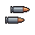
TIRO DUPLO
2 PROJÉTEIS
Dois tiros paralelos. No GIF: em cima, a nave sem a carta; embaixo, com ela.
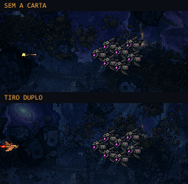
Cada skill na F2, com a nave atirando (ou o lançador disparando) em alvos postos à mão. Os números são os provisórios de hoje (calibragem é a frente C). A explosão já é a arte aprovada (A + B); o resto da arte das peças — drones, mísseis, tiros finos, estilhaço, faísca, eletrificado — ainda é provisória. GIFs em 20 qps, velocidade real, ampliados 2× sem suavizar.

2 PROJÉTEIS
Dois tiros paralelos. No GIF: em cima, a nave sem a carta; embaixo, com ela.

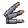
3 EM LEQUE
Três tiros em leque curto (±5°). Substitui o Duplo.
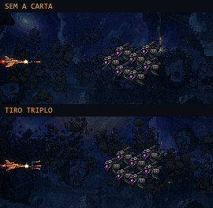

+15% CADÊNCIA
+15% de tiros por segundo por carta (até ×3, +52%).
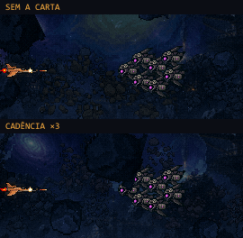
ATRAVESSA INIMIGOS
O tiro atravessa inimigos — cada um leva o dano uma vez. Rocha ainda para o tiro.
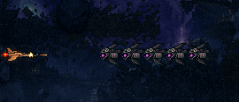
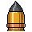
DANO x2
Dano ×2; o tiro sai 30% mais lento e 30% maior.
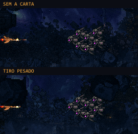

MÍSSIL QUE PERSEGUE
A cada 3s. Trava a mira no disparo; ×2 = um alvo para cada, o 2º sai 140ms depois. Persegue com inércia: erra, faz a curva e volta. No fim da vida (2,5s) explode no ar.
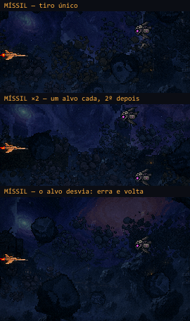
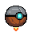
DRONE QUE ATIRA
Segue a nave e dá um tiro próprio — fraco, guiado, a cada 1,2s, até 160px —, laranja na humana, ciano na manta. Não copia as cartas da nave. Desvia de LADO de quem passa.
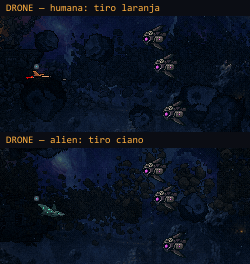
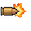
EXPLODE AO ACERTAR
O tiro explode ao acertar (raio 18px, 1 de dano). O leque abre para o lado de onde o tiro veio.
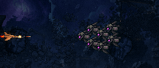

EXPLOSÕES MAIORES
Toda explosão do jogador fica 50% maior (18 → 27px) — e o impacto troca para o leque grande.
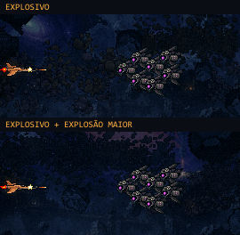

SOLTA ESTILHAÇOS
Toda explosão solta 5 estilhaços: em leque para a frente, se veio de um tiro; em círculo, se não. Estilhaço não explode de novo.
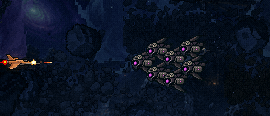
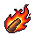
PODE INCENDIAR
25% de chance de pôr fogo: 1 de dano a cada 0,4s por 2s.
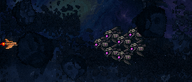
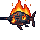
QUEIMADO EXPLODE
O queimado que morre explode em fogo (raio 26px, 2 de dano).
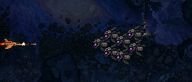
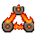
EXPLOSÃO INCENDEIA
Toda explosão incendeia quem está no raio — com a Combustão, um queimado puxa o outro.
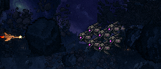
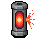
SOLTA ARMADILHA
O jogador solta (tecla L, provisória; espera de 8s; "FLARE 6s" contando na HUD). Fica para trás, freando: explode em quem tocar, ou sozinho em 3s.
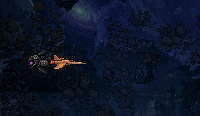

CHOQUE QUE TRAVA
20% de chance de eletrificar: o inimigo trava 0,4s — não anda, não atira. Chefões e a aranha levam o choque mas não travam.
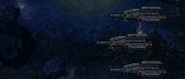

CHOQUE SALTA
O choque salta para até 3 próximos (50px), um por vez, sem voltar. O raio é desenhado em pixel.
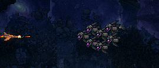

ELETRIFICADO EXPLODE
O eletrificado que morre solta um pulso (30px, 2 de dano). O pulso não eletrifica.
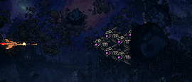

ABSORVE 1 GOLPE
Absorve 1 golpe e volta em 8s. A aura é o contorno de 1px da silhueta da nave; no golpe, estoura.
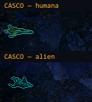
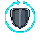
CASCO VOLTA RÁPIDO
Sem GIF (número): o Casco volta em 5,5s em vez de 8s. Máx. 1.

+1 VIDA
Sem GIF (número): +1 vida (um ♦ a mais na HUD).
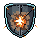
CASCO EXPLODE
O casco partido explode (raio 40px, 3 de dano).
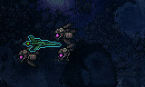
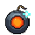
+1 BOMBA
Sem GIF (número): +1 bomba por vida — "B×4" na HUD (×2: "B×5").
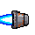
+12% VELOCIDADE
Sem GIF (número): +12% de velocidade no voo livre, por carta. Fora da F1.
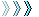
AVANÇO INVULNERÁVEL
Dois toques numa direção: ~40px em 0,15s, invulnerável por 0,2s, com imagens-fantasma. Espera de 8s ("DASH 5s" contando na HUD). Fora da F1.
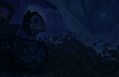